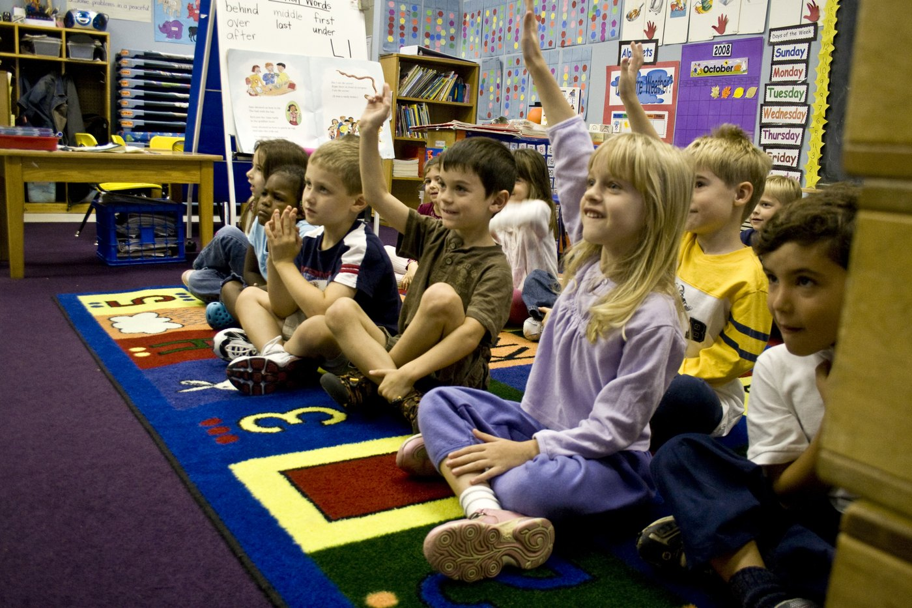
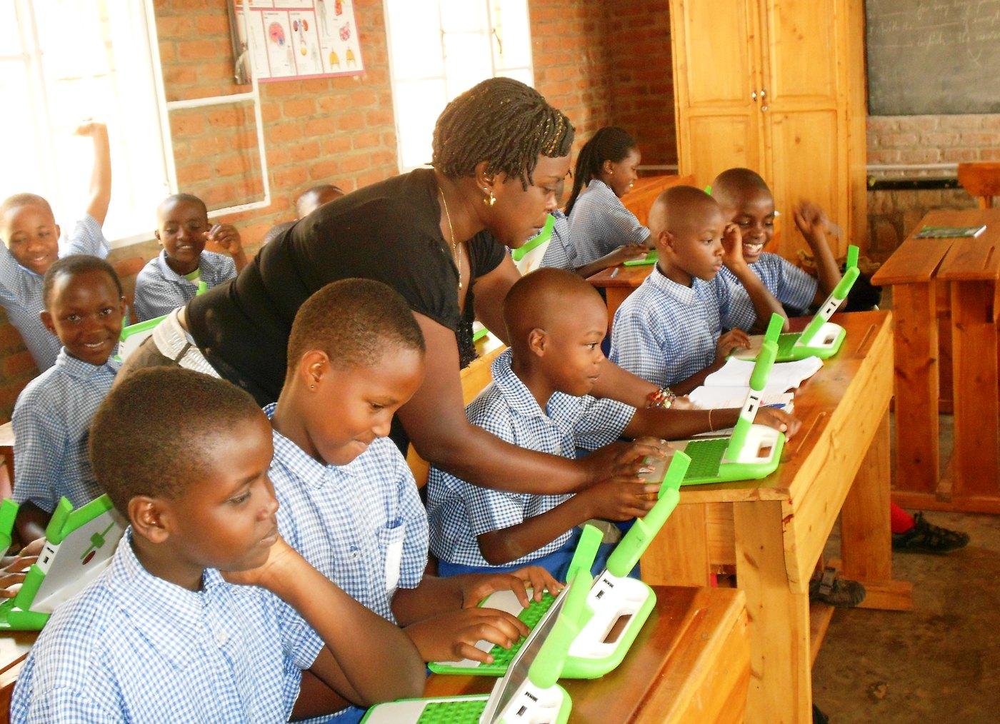
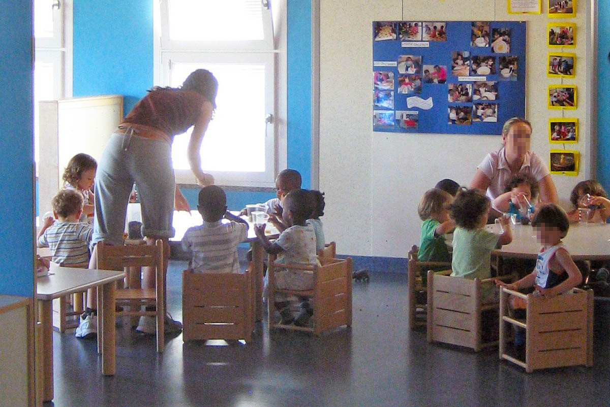
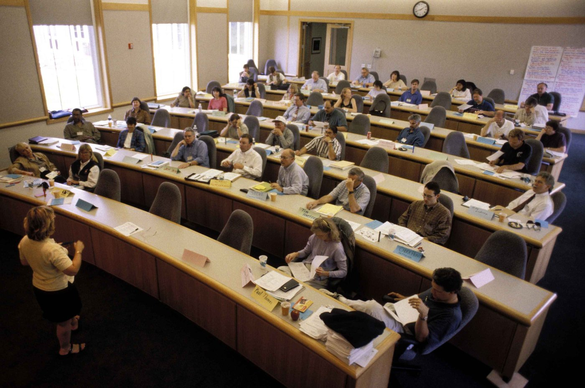
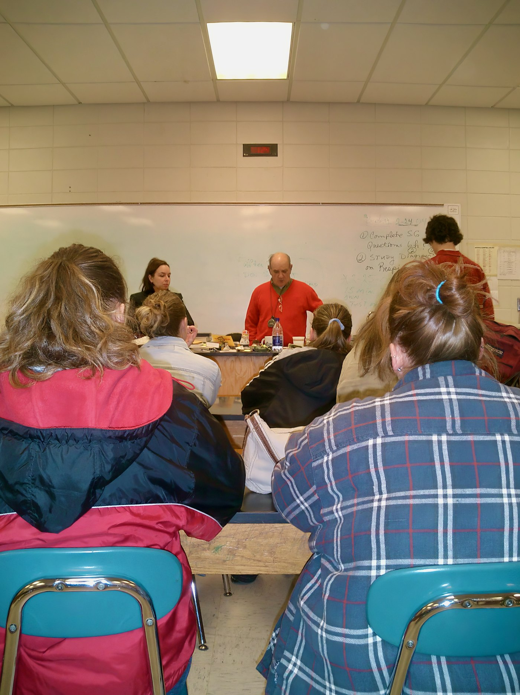

Liderazgo directivo
Toma decisiones, motiva al equipo, orienta metas compartidas y dinamiza la gestión.
Un organizador visual completo, con enfoque de calidad educativa, interdependencia entre dimensiones, criterios de entrada/proceso/producto, indicadores, instrumentos y centralidad del niño.
Se entiende como la organización de recursos, la toma de decisiones, el seguimiento y la mejora continua para garantizar aprendizajes integrales, inclusión y bienestar en el nivel inicial.
Calidad educativa con aprendizajes significativos, seguros, equitativos y afectivos.
Por dimensiones interdependientes que sostienen la gestión institucional.
Con criterios, indicadores, instrumentos y resultados centrados en el niño.
se compone de seis dimensiones que actúan como sistema.
se evalúa mediante entrada, proceso y producto.
impacta en el desarrollo integral del niño y la satisfacción de las familias.
Cada dimensión se conecta con las demás; si una falla, el servicio completo se debilita.
Toma decisiones, motiva al equipo, orienta metas compartidas y dinamiza la gestión.
Diagnostica la realidad, prioriza problemas y convierte necesidades en proyectos y acciones.
Verifica metas, procesos y resultados para corregir, mejorar y sostener lo logrado.
Promueve relaciones respetuosas, seguras y colaborativas que favorecen el aprendizaje.
Actualiza al equipo docente y administrativo para responder a los desafíos pedagógicos.
Se expresa en la planificación curricular y en estrategias pertinentes a la realidad infantil.
Este bloque responde directamente a la rúbrica porque distingue recursos, procesos y resultados.
Aquí conviene mostrar que el indicador no es el instrumento: el primero se observa, el segundo recoge evidencia.
| Indicador | Descripción analítica | Instrumentos de medición |
|---|---|---|
| Competencias docentes | Capacidad para adaptar estrategias según necesidades del niño. | Portafolios docentes, rúbricas y evaluación de desempeño. |
| Equidad y acceso | Garantía de igualdad de oportunidades sin distinción de origen. | Tasas de matrícula, retención y culminación. |
| Clima escolar | Ambiente de inclusión, bienestar emocional y convivencia positiva. | Encuestas, diarios de observación y listas de cotejo. |
| Desarrollo integral | Progreso en áreas cognitivas, sociales, emocionales y motrices. | Portafolios, cuadernos de campo y observación sistemática. |
| Rendimiento académico | Logro de aprendizajes en áreas clave y cumplimiento de metas. | Evaluaciones estandarizadas y registros de logro. |
Este bloque te ayuda a cerrar con la idea más importante: la gestión existe para el bienestar del niño.
La gestión cobra sentido cuando responde a necesidades fundamentales: subsistencia, protección, afecto, entendimiento, participación, creación, identidad y libertad.
Esta parte te sirve como respaldo si la profesora evalúa contenido, claridad y enfoque.
Explica las seis dimensiones con claridad y muestra su interdependencia.
Diferencia entrada, proceso y producto con ejemplos concretos del servicio educativo inicial.
Integra equidad, diversidad, participación y eliminación de barreras.
Relaciona portafolios, rúbricas, encuestas, cuadernos de campo y observación sistemática.
Están dentro del zip en la misma carpeta del HTML, así que se verán directo al abrir la página.




